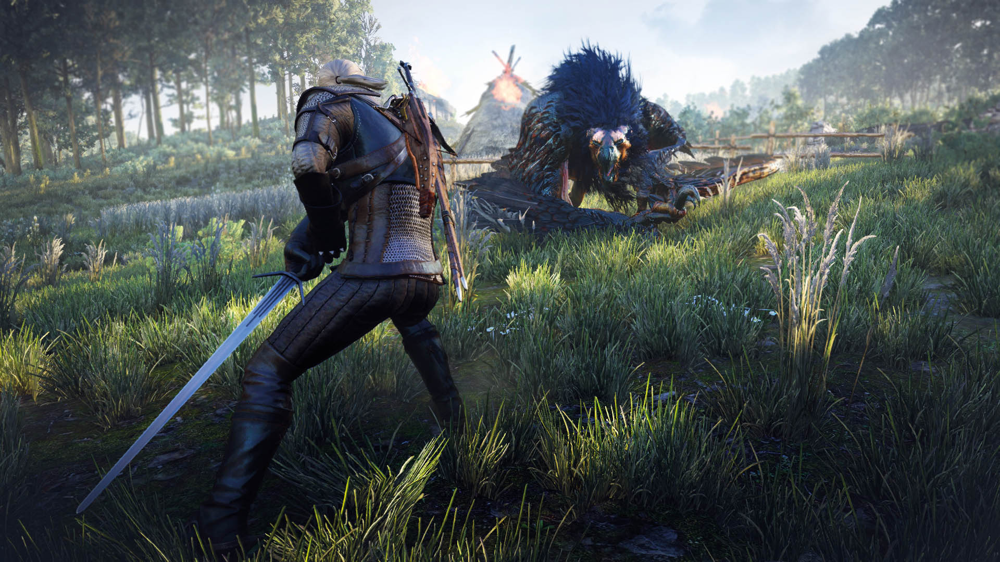
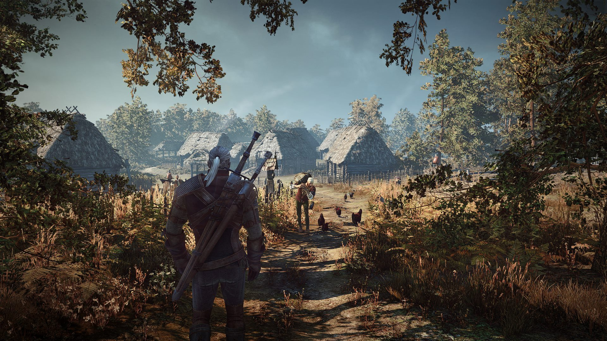

Witcher 3: Wild Hunt



The Witcher 3 (Ведьмак 3)- новая часть популярной игры в жанре РПГ, которая собрала многочисленных поклонников по всему миру. Каждая новая часть игры удивляла своих пользователей все новыми и новыми фишками, а также нововведениями. Здесь значительно улучшена графика, теперь ты сможешь почувствовать себя в атмосфере реальности. Огромным плюсом есть то, что каждая последующая часть становится все лучше и лучше, что редко бывает в игровом мире. Здесь нужно помнить о том, что каждый выбор и принятое решение будет влиять на ход событий и последующую жизнь главного героя. Мир игры огромен, красив и открыт для каждого, а также преподносит массу возможностей и интересных развилок сюжетной линии. Здесь ты сможешь заняться всем, чем угодно, но главное не забывай о своих боевых способностях. Игра порадует красивой прорисовкой и интересным сюжетом, который способен захватить любого игрока с головой.
Моё мнение:
The Witcher 3 действительно поразил меня своим потрясающим сеттингом и инновационными игровыми механиками. Великолепно разработанный мир, насыщенный деталями и разнообразными локациями, позволил мне полностью погрузиться в его глубины. Сюжетная линия оказалась очень увлекательной, и финал игры не разочаровал - он был удивительно удовлетворительным и оставил приятное послевкусие.
Особое внимание заслуживают DLC-расширения игры, которые можно смело назвать шедеврами. Эти дополнения продолжили историю главного героя, добавив новые квесты, персонажей и увлекательные приключения. Качество и тщательность разработки DLC можно сравнить с произведениями искусства, и я бы с уверенностью сказал, что они заслуживают высшей награды.
Помимо основной сюжетной линии и DLC, дополнительные задания также являются значительной составляющей Witcher 3. Они предлагают множество увлекательных и разнообразных вызовов, позволяя игроку полностью исследовать мир игры и встретиться с уникальными персонажами. Благодаря этому игра оставляет ощущение глубокой и насыщенной путешествия.
Несмотря на то, что игра может иметь некоторые проблемы с оптимизацией, я впитался в её мир настолько глубоко, что это не сильно повлияло на моё восприятие игрового процесса. Я просто не мог оторваться от экрана и прошел игру на одном дыхании. Если вы еще не играли в Witcher 3, я настоятельно советую вам сделать это. Вы не пожалеете о потраченном времени и погрузитесь в незабываемое приключение, которое заставит вас полностью проникнуться всем его великолепием и масштабом.
Системные требования:
ОС: Windows 7, 8, 10 (64 бита)
Процессор: Intel CPU Core i5-2500K 3.3GHz / AMD CPU Phenom II X4 940
Оперативная память: 6Гб
Видеокарта: Nvidia GPU GeForce GTX 660 / AMD GPU Radeon HD 7870
Памяти на Жестком Диске: 35Гб